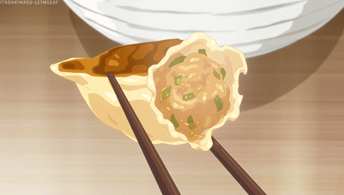

Gyoza Recipe

Best dang gyoza you'll ever put in your mouth!
There's nothing worse than a soggy gyoza. I mean, what's the point of them being called pot stickers when the bottom never stuck? I like me some cwispy and moist gyoza and in this recipe I'll show you how to do it!
What you'll need:
For the Dumplings
- 1 tsp black pepper
- 4 Tbsp of diced garlic
- 2 Tbsp ginger paste
- 1/2 tsp salt
- 1lb ground pork (preferably not lean)
- 1 tsp sesame oil
- 1 1/2 Tbsp soy sauce
- 1 1/2 tsp magic sarap (or dashi powder)
- 2 tsp sugar
- 1 Tbsp cornstarch
- 1 package dumpling wrappers
For the Dipping Sauce
- 1 Tbsp soy sauce
- 2 Tbsp white vinegar
- 1 tsp sesame seeds